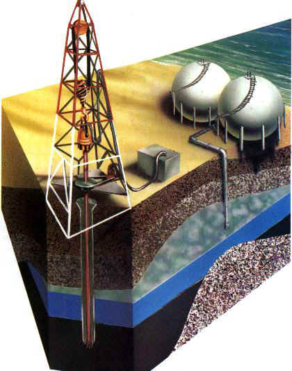
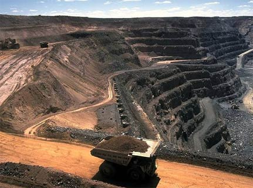

APLICACIONES
INDUSTRIA DEL PETROLEO
La geología del petróleo es una aplicación especializada de la Geología que estudia todos los aspectos relacionados con la formación de yacimientos petrolíferos y su prospección. Entre sus objetivos están la localización de posibles yacimientos, caracterizar su geometría espacial y la estimación de sus reservas potenciales.
En la geología del petróleo se combinan diversos métodos o técnicas exploratorias para seleccionar las mejores oportunidades o plays para encontrar hidrocarburos (petróleo y gas natural).
El desarrollo de la geología del petróleo tuvo lugar principalmente entre las décadas de los años 1970 y 1980, cuando las empresas del petróleo crearon grandes departamentos de geología y destinaron importantes recursos a la exploración. Los geólogos de esta industria aportaron a su vez nuevos avances a la Geología, desarrollando, por ejemplo, nuevos tipos de análisis estratigráfico (estratigrafía secuencial, microfacies, quimioestratigrafía, etc.) y geofísicos.

MINERIA
La minería es la extracción selectiva de los minerales y otros materiales de la corteza terrestre de los cuales se puede obtener un beneficio económico, así como la actividad económica primaria relacionada con ella. Dependiendo del tipo de material a extraer la minería se divide en metálica, no metálica y piedras ornamentales y de construcción. Existen más de 7000 minas en producción y se construyen más cada año. La minería ha tenido un significativo impacto en el desarrollo de muchos países (incluso algunos que hoy en día no tienen industria minera).
Los métodos de explotación pueden ser a cielo abierto o subterráneo. Los factores que lo determinarán serán entre otros la geología y geometría del yacimiento y la característica geomecánica del mineral y el estéril, también influyen factores económicos que rigen la industria minera actual.
El proceso de minería involucra diferentes etapas las cuales son llevadas a cabo para desarrollar un proyecto minero, dentro de estas etapas se encuentran; la búsqueda y estimación de recursos, proyecto (prefactibilidad, factibilidad, ingeniería de detalles), obras, desarrollo minero ó explotación (arranque y manejo de materiales), procesamiento y comercialización.

Noticias Geologicas

Noticias Geologicas
Departamento de geocicias Universidad Nacional de Colombia